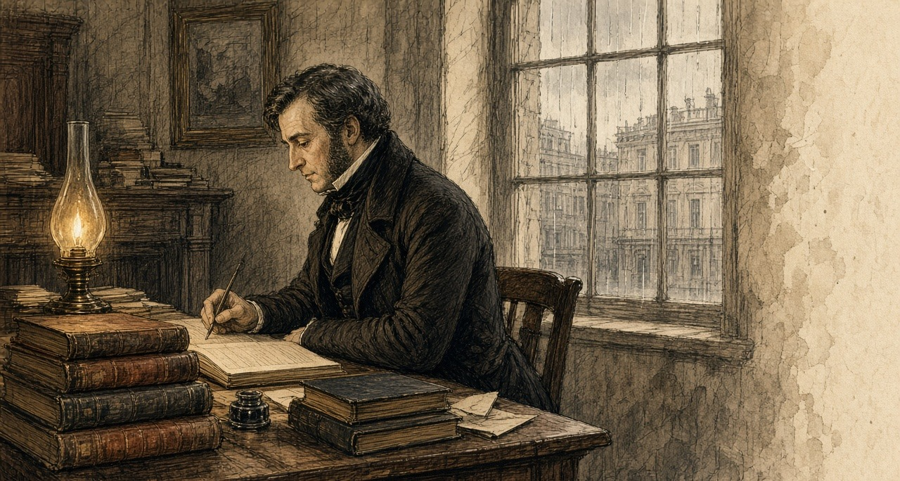
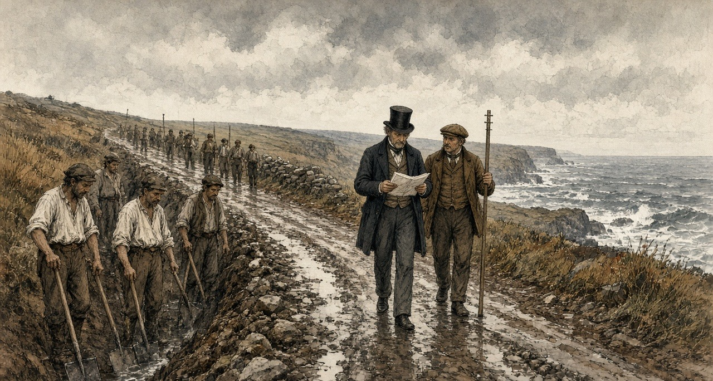
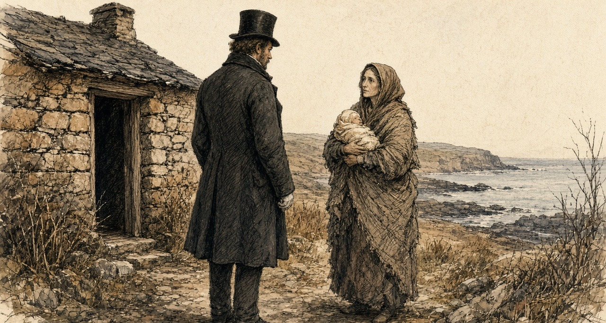
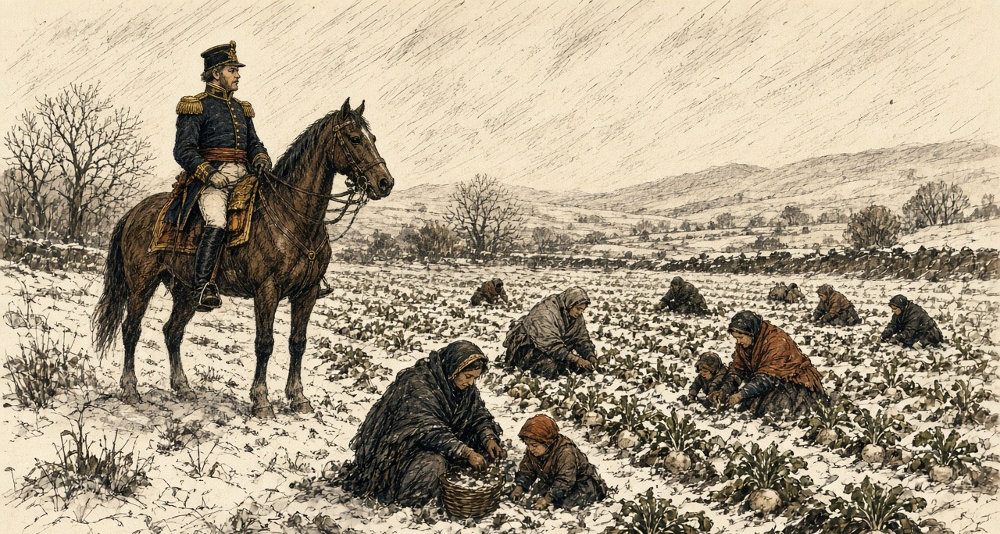
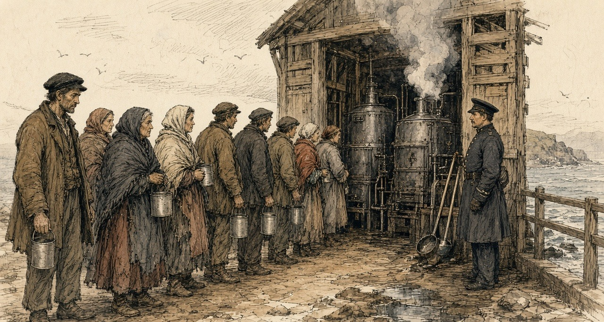
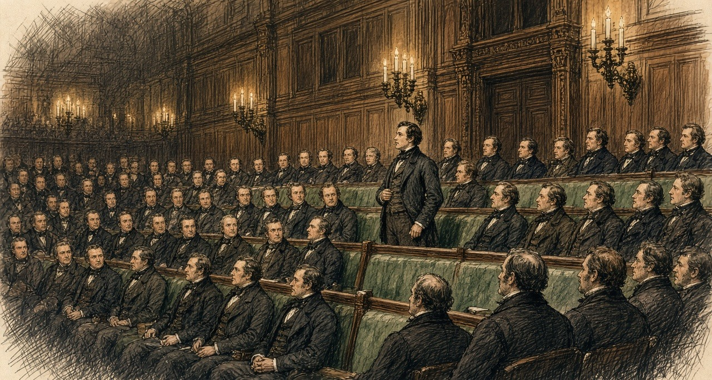
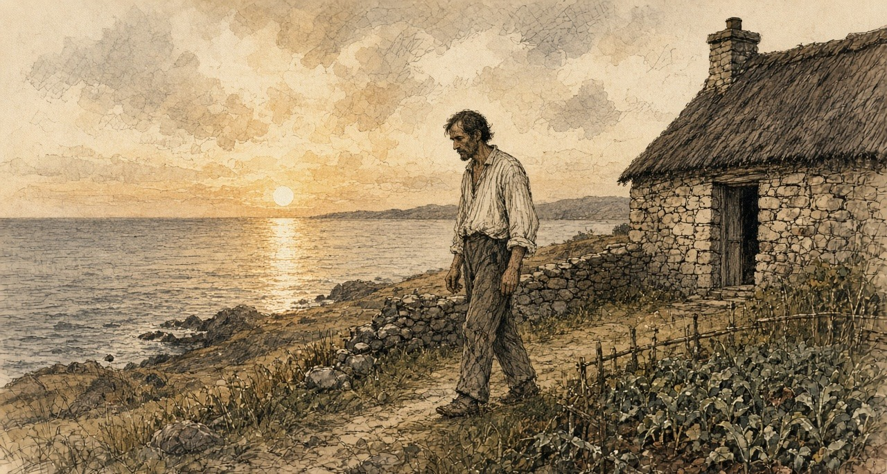

Chapter 9
Twelve O'Clock Precisely, 1846–1847
Foynes, Cork, London, West Carbery, the county of Clare and the House of Commons, September 1846 to September 1847
Lord Monteagle wrote his letters at Mount Trenchard, the family house above the Shannon near Foynes, in the county of Limerick. As Thomas Spring Rice he had been Chancellor of the Exchequer from 1835 to 1839. In the autumn of 1846 he was the chairman of the relief sessions at Shanagolden, a village a few miles inland, and the new public works for his district were not yet begun.
On 27 September he wrote to Henry Labouchere, the Chief Secretary for Ireland, against a county meeting to demand an early session of Parliament. "We have … more than enough to do organising our committees of our public works and we should not be taken off from this pressing duty to the excitement of hustings speaking."
Three days later he wrote to Richard Griffith of the Board of Works, and he wrote faster. "Do not think me impatient but the pressure which is likely to come upon us is something very formidable indeed. Hitherto the confidence which the people place in me and in mine has preserved tranquillity and we have been ably seconded by the R.C. clergy who are acting cordially with us. But this cannot last very long." He wanted the Foynes works hurried on, "for at present we have no kind of employment along that district N. of Shanagolden and extending between your road and the river."
On 1 October he wrote to the Treasury.
* * *
The Treasury, Whitehall, Friday, 9 October 1846
Charles Trevelyan was Assistant Secretary to the Treasury, and he kept copies of his letters in bound books. His answer to Monteagle ran to thirty-five pages. It opened on the receipt of the post.
"My dear Lord, I have had the pleasure of receiving your letters dated 1st instant, and before proceeding to the subjects more particularly treated in it, I must beg of you to dismiss all doubt from your mind of the magnitude of the existing calamity and its danger not being fully known and appreciated in Downing Street."
The government establishments, he went on, were "strained to the utmost to alleviate this great calamity and avert this danger."
Further on he set out what government was for. "It forms no part of the functions of government to provide supplies of food or to increase the productive powers of the land." The landlords had their part, and he wrote what he thought of the way they were playing it. "The nobility and gentry have met in their respective baronies … calling upon the government to do everything, as if they have themselves no part to perform in this great crisis of the country."
Then he wrote about Providence.
"I think I see a bright light shining in the distance through the dark cloud which at present hangs over Ireland. A remedy has already been applied to that portion of the maladies of Ireland which was traceable to political causes, and the morbid habits which still to a certain extent survive are gradually giving way to more healthy action. The deep and inveterate root of social evil remains, and I hope I am not guilty of irreverence in thinking that, this being altogether beyond the power of man, the cure has been applied by the direct stroke of an all-wise Providence in a manner as unexpected and unthought of as it is likely to be effectual. God grant that we may rightly perform our part and not turn into a curse what was intended for a blessing."

The law the works ran under had passed at the end of August, the Act 9 & 10 Vict. c. 107. Under it the gentlemen and ratepayers of each barony met at extraordinary presentment sessions and voted the works, and the money was advanced from the Treasury and charged back on the barony. Trevelyan described the sessions himself, in print, a year and a quarter later. In the southern and western counties roads were "presented in the mass," at a cost which "in some cases, much exceeded the annual rental of the barony."
* * *
Anderson's Quay, Cork, Friday, 9 October 1846
The same day, in Cork, a merchant named Nicholas Cummins sat down to his own letter to Trevelyan. He was the managing partner of the house of N. and J. Cummins, on Anderson's Quay, and the Cork correspondent of Barings, the London bank through which Sir Robert Peel had bought his Indian corn the winter before. In September Commissary-General Hewetson had commended him to the Treasury as "an intelligent and upright man." He sent Trevelyan the Cork markets by letter, at Trevelyan's own desire.
"My last respects were of the 1st instant; since when our corn markets have continued to be largely supplied with home produce, prices of which have been receding for the last few days; Indian corn is unchanged in value; shipments of oats from this port are beginning to take place: during the week they have amounted to about 12,000 barrels of 14 stone; there has also been some small export of flour and oatmeal."
Twelve thousand barrels of fourteen stone is a hundred and sixty-eight thousand stone of oats, the grain that in Routh's words of the January before was grown "as means of payment for rent." It went out of Cork harbour in a week.
Cummins had better news from the coast. "A most abundant and providential take of fish, especially herrings, has greatly contributed to relieve the distress during the last 10 days in the coast districts; the supply of herrings, when salted, enables the people to make use of the remnant of the potato crop, which could scarcely be eaten without them."
Some of the county's presentment sessions, he reported, had voted works "in many cases exceeding the entire annual valuation." And he noted a price. The farmers wanted bere, the barley that ripens a month before any other grain, for seed, and it had "run up from 12s. to 25s. the barrel of 16 stone."
* * *
The relief road, west Clare, November 1846
Shut they the summer road on us in the month of August, and opened they the new line when the gentlemen sat at the presentment sessions. Is the same rule in it: the ticket. Takes a man the ticket from the committee, and shows he it to the steward, and writes the check-the clerk name down in the book.
Is task-work that is on us now. Is no penny given for the length of the day, ach for the weight of the rock you break. Walks the steward down the drain in the dusk with the measuring-rod in his hand, and measures he the perch of bank you out and the heap of stones you sledged, and is that your wage on the Saturday—if pleases the pay-clerk to ride out on the Saturday.
Came he not at all the last week. Until the Tuesday after were we fasting on the ditches waiting for him.
Are the palms of my two hands gone soft as a child's with the want of the solid food. Peels the skin off them on the shaft of the wheel-barrow, and goes the blood soaking into the timber, and in the frost of the morning is the hand stiffened into a claw, so that it is slow you pry the fingers open.
Are hundreds of us crowded on this one cutting. Men out of the red bogs, men up from the strands. The poor wandering people that came in from Kerry and Cork in the old years to cut the red wrack on the rocks and threw up their scalpeens in the sand-hills—are they besides us too. Says the Board's officer that the list is too heavy. Walks he down the line with the book and strikes he the names out with his pencil, one after another, and stand the men he strikes by the gripe of the ditch with the loy still in their hands, looking at him.

Left he my name in the book.
Rises the Indian meal at the huckster's every market-days. Buys the Saturday's silver less on the Monday than it bought the week before. Boils the woman of the house the yellow dust in the big water so it will stretch round the children, and lades she the thick setting off the iron bottom into my noggin, for is it on my two legs the road depends. I put no question to her on what goes into her own mouth.
Went her good shawl to the dawn in Kilrush first, and went my freeze coat after it. Stands a man in his linen shirt on the hill now, in the black month of November, over the sea. Bionn the gale off the great ocean driving in over Kilkee and the rain flat as a slate in it. In the dark of the night is the little one wedged between the two of us in the bracket, and not a thread of a blanket over our bones.
* * *
Ennis and Clare Castle, Saturday, 5 December 1846
Captain Edmund Wynne was an inspecting officer of the Board of Works, at Ennis. In the barony of Moyarta, the barony of Kilkee and Carrigaholt, he had a Mr. Marcus Keane look into the state of the townlands, and on 5 December he gave the Board the answer. "Including the remnant of the potato crop, there are not provisions for three weeks, and these, too, in the hands of a few individuals. Now, at the expiration of this period, all the money in the Treasury cannot meet the wants of the frightful population in that district without importing provisions."
Along the coast, he believed, the people were a third more than the census of 1841 had counted. "Squatters from all the southern counties have settled down, and converted the country into one monster cottier farm."
He was still writing when the news came in.
"I have just received, while writing, an account of one of the stewards being shot this evening, about 5 o'clock, between this town and Clare Castle." The steward was Hennessy, the principal overseer of the works in the parish of Clare Abbey. He was walking with two friends, one of them a pay clerk of the Board. Three soldiers were about twenty yards in front of him and two about the same distance behind. "A man stood on the ditch, within two yards of Hennessy (the steward), and fired at him, lodging the contents of the blunderbuss in his hip; he then stopped to explain that he did not intend to shoot anybody but Hennessy, and walked off quietly, without the slightest effort being made to stop him."
Hennessy had been carrying out orders Wynne and the engineer Gamble had given him the Saturday before. "And for this he has been shot." About forty slugs and large shot were taken out of him. In a private letter two days afterwards Wynne wrote that the blunderbuss "was badly loaded with some of our blasting powder." The man was well known, he wrote, and there was not a chance of his being brought to justice.
The rule was that a work on which an outrage was committed stopped until the man who committed it was given up. On 7 December Wynne and Gamble signed a public notice. The works in the parish of Clare Abbey were discontinued, "In consequence of the outrage committed on Mr. Hennessy, the principal Overseer." If information was given that led to the arrest, the works would be resumed. "Whereby 900 men are sent adrift," Wynne wrote. The people of Clare village, Gamble reported to Dublin, had gathered round Hennessy's house, "hooting and joking on the subject," and refused to go for a doctor.
Nobody gave information.
* * *
Caheragh and Skibbereen, county Cork, November and December 1846
Denis M'Kennedy worked on a road in the West Division of West Carbery, in the parish of Caheragh, north of Skibbereen. The arrears of the pay clerks in that barony had been the subject of letters for weeks. The Board had remitted £1,700 to its man, Mr. J. H. Love, on 10 October, for both divisions of the barony. Some of it was paid out in the wrong division. The pay clerk, Mr. Gibbs Ross, did not act on his instructions, and candidates for the post of pay clerk did not want to go to the far west of the district at all.
M'Kennedy worked a fortnight without pay. Then he died.
Dr. Patrick Dore saw the body on the Monday after the death and made an external examination. There was no injury on it. Then he and Dr. Daniel Donovan opened it. They opened the abdomen and they opened the chest. They looked for food in the stomach and there was none. They followed the gut down, and there was none in the small intestines either. In the large bowel they found what was left. "A portion of undigested raw cabbage, mixed with excrement, that appeared to be the residue of some raw vegetable substance." There was no sign of any disease that would have killed him.
The coroner's jury gave its verdict. "Died of starvation, caused by the gross neglect of the Board of Works."
George Pinchin, the sub-inspector of constabulary, sent the verdict and the doctors' evidence to the Inspector-General with one line of his own. "The deceased, Denis M'Kennedy, was working on the road for a fortnight without receiving any pay." The Board answered in a memorandum that the £1,700 had been "ample provision for all the works then in progress," that Mr. Ross's conduct "appears to have been very improper," and that another person would be appointed in his stead.
There were more inquests at Skibbereen. On 4 December Trevelyan wrote to Colonel Jones, the chairman of the Board of Works. "I enclose another police notice of two more inquests at Skibbereen, on men who are alleged to have died of hunger on the Relief Works. How do you account for these repeated deaths at Skibbereen?" None of Jones's officers might be to blame, he allowed, "but we shall be expected to show that every possible precaution has been taken, and inquiry made."
Two days before, on 2 December, he had written to Jones of the people. "The great evil with which we have to contend" was "not the physical evil of the famine, but the moral evil of the selfish, perverse and turbulent character of the people."
* * *
South Reen, parish of Myross, Tuesday, 15 December 1846
N. M. Cummins, a justice of the peace who lived at Ann Mount, in Cork, had held some small property in the west of the county for many years. Lamentable accounts of the coast had reached him, and he thought it right to investigate their truth himself. On 15 December he went to Skibbereen, and out to one townland on the eastern side of Castlehaven Harbour, called South Reen. He knew what he was likely to find. He took as much bread as five men could carry.
The hamlet looked deserted.
He went into the cabins to find out why. In the first, in a corner, on some filthy straw, lay six bodies under what looked like a ragged horse-cloth. Their legs hung out from under it, bare, naked above the knees. He took them for dead.
He went closer. From the heap on the straw there came a low moaning, and he understood they were alive. They were in fever. He counted them as what they were. Four children. A woman. And, in his words, "what had once been a man."
Within a few minutes he was not alone in the townland. At least two hundred people were round him. Most of them were delirious, with hunger or with fever, and they were yelling. Hands took hold of his clothes and pulled at them, and the clothes came near to tearing off him. He tried to get clear of them. Something seized his neck-cloth from behind and held it with a grip that turned him round.
It was a woman. In her arms she had an infant just born. Round her loins she had the remains of a filthy sack, and that sack was the only thing covering either of them.

That morning the police opened a house on the next lands that had been seen shut up for days. Inside, on the mud floor, there were two frozen corpses. The rats had eaten half of them. The same day a mother, herself in fever, was seen dragging out the body of her daughter, a girl of about twelve, naked, and leaving it half covered with stones. Within five hundred yards of the cavalry station at Skibbereen the dispensary doctor found seven people lying under one cloak who could not move. One had been dead for many hours. The others could not move themselves, or him.
On 17 December, at Ann Mount, Cummins wrote it all down in a letter to the Duke of Wellington, and sent it to The Times. "Without apology or preface, I presume so far to trespass on your Grace as to state to you, and, by the use of your illustrious name, to present to the British public the following statement of what I have myself seen within the last three days." He wrote what he had seen at South Reen. "Their demoniac yells are still ringing in my ears, and their horrible images are fixed upon my brain. My heart sickens at the recital, but I must go on."
He did not spare the men in office. "To what purpose should I multiply such cases? If these be not sufficient, neither would they hear who have the power to send relief, and do not, even 'though one came from the dead.'" He told the Duke what to do with it. "You have access to our young and gracious Queen, lay these things before her. She is a woman, she will not allow decency to be outraged." And at the end: "Once more, my Lord Duke, in the name of starving thousands, I implore you, break the frigid and flimsy chain of official etiquette, and save the land of your birth."
The Times printed the letter on Thursday, 24 December 1846.
* * *
Cork and Limerick, 30 December 1846
Nicholas Cummins of Anderson's Quay wrote to Trevelyan again on 30 December, and enclosed the letter from The Times. "A near relative of my own, to whose published statement (sent herein) I refer you, has been but one of many credible witnesses who have actually seen the extent of the misery." Two Quakers had been through West Carbery the week before, and their account was "even more distressing, if indeed, that can be, than the report of Mr. Cummins."
Then the merchant gave the market. "Although several cargoes of maize have come to hand here during the past ten days, no impression worth notice has been made upon prices, which stand at, for Indian corn, 17l. 5s. per ton in ship." Food, he wrote, "is not to be had for money in many places." The flour mills of Messrs. Allen at Shannon Vale, near Clonakilty, had burned down the week before.
Hewetson wrote to Trevelyan from Limerick the same day with the same Cork price. Shipped direct from the States, he wrote, it stood the consignee at no more than £9 or £10 a ton. "These are really famine prices." The captain of the American ship Isabella, up and down the Shannon on the public steamers, made no secret of "the enormous profits the English and Irish houses are making by their dealings with the States." "One house in Cork alone, it is affirmed, will clear 40,000l. by corn speculation." He called the prices extortionate and then took the word back, "but as they are according to the spirit of trade, and therefore legitimate I will qualify the term to famine rates."
On 7 January Sir Randolph Routh, at Dublin Castle, answered a report on the parish of Schull, west of Skibbereen. A Cork house, George and Co., had two large mills at Skibbereen, and its agent, Mr. Swanton, was "retailing meal in any quantity required; and our store is also open. So that food is not wanting, but rather the money to buy it."
In the same letter Routh gave the Treasury an estimate of the rents. The proprietors of the Skibbereen district, he wrote, drew an annual income of £50,000 from it. He listed them. Lord Carbery, £15,000. "Sir Wm. Rixon Beecher (on whose estate stands the town of Skibbereen)," £10,000. Richard H. H. Beecher, £4,000. Mr. Newman, £4,000. The O'Donovan, £2,500. Smaller names followed. "Ought such destitution to prevail with such resources, allowing that I am misinformed in some of the points." On 8 January a Treasury Minute asked who the principal landowners were, "and what sums of money they have contributed."
The rector of Creagh, near Skibbereen, Mr. Caulfield, wrote to the Home Secretary in the first days of January. The workhouse, built for 800, held 960. Deaths in it in November, 83. In December to the 28th, 135. In the same two months of the year before, 7. "In the small burying-ground near Skibbereen, eight bodies were interred within an hour. Very few now attend funerals, which is strange in this country."
* * *
Clare Abbey, Thursday, 24 December 1846
The works at Clare Abbey had been stopped since 7 December. On Christmas Eve Wynne went through the parish himself.
He wrote to Colonel Jones from Ennis that night.
"I must, however, again call your attention to the appalling state in which Clare Abbey is at present; I ventured through that parish this day, to ascertain the condition of the inhabitants, and although a man not easily moved, I confess myself unmanned by the extent and intensity of suffering I witnessed, more especially amongst the women and little children, crowds of whom were to be seen scattered over the turnip fields, like a flock of famishing crows, devouring the raw turnips, mothers half naked, shivering in the snow and sleet, uttering exclamations of despair, whilst their children were screaming with hunger; I am a match for any thing else I may meet with here, but this I cannot stand."

"When may we expect to resume the works? Nothing but dire necessity would make me advocate this step, feeling as I do, that I thereby throw away the only armour we possess against the bullet of the assassin; but it cannot be helped."
In the same letter he reported prices. "Provisions are all but exhausted; and the holders of the remnant demand such exorbitant prices as place more than one meal a day quite beyond the reach of the labourer with a family, even though in constant employment." In Ennis that day he could not get a loaf of bread for himself, because his servant had not ordered it in the morning.
Wynne wrote again on 29 December, about the people who from age, infirmity or exhaustion could not work, and were "beyond the reach of Relief Works." "Already several deaths have occurred, I fear, too, from starvation; they must increase daily." "Such is their state of alarm and despair at the prospect before them that they cannot be induced to look beyond to-morrow; thousands never expect to see the harvest." And he described the country around Ennis. "The effects of famine are discernible everywhere, not a domestic animal to be seen, pigs and poultry have quite disappeared." The dogs were gone, "except here and there the ghost of one buried in the skeleton of one of those victims of cruelty and barbarity which have been so numerous here within the last two months." He meant the horses and donkeys that had been shot. "It is an alarming fact, that this day, in the town of Ennis, there was not a stone of bread stuff of any description to be had on any terms, nor a loaf of bread."
* * *
The Treasury, Tuesday, 5 January 1847
The new year brought a report from Hugh Parker, an officer of the Board, written on 31 December after a tour west of Skibbereen. Of the 18,000 people of the parish of Schull, he reckoned, 16,000 were "in a state of utter destitution." The rector, Dr. Traill, kept soup kitchens at work. "The people now drop off very fast, and deaths increase daily." "Death seems stamped on the faces of thousands; in many places I could with difficulty move, I was so beset with hundreds imploring assistance."
Trevelyan sent it on to Routh on 5 January.
"The accompanying description by Mr. Hugh Parker, of the state of the population in the remote districts to the west of Skibbereen, is the most awful I have yet seen, and it makes me, as well as you, anxious to hear what progress Mr. Bishop is making in his mission to that quarter, for the extension of soup-kitchens. I lament to have to express my opinion that this rude expedient of the public kitchen, is the only thing which stands between multitudes of our fellow countrymen and death, and we are very anxious that it should be carried to the utmost possible extent in the districts in which it is required."
Routh had already written out the method for Clare. On 30 December, with Wynne's letter of the 29th in front of him, he sent it to Hewetson, copied from Skibbereen. One or two kitchens to a village, with cauldrons enough. A policeman appointed by the constabulary officer to stand over the issue, "to see that the articles purchased for the soup are actually put into it, that it is distributed at twelve o'clock precisely, and that good order is preserved."
* * *
Kilkee, January and February 1847
The Commissariat officer at Kilrush, Captain Mann, came over to Kilkee on Thursday, 14 January, and the gentlemen agreed there would be a soup kitchen. There was no boiler. One was coming from Dublin. Until it came they were to use the boilers from the baths, the ones that heat the sea water. The contracts for the meat were to be taken on the Saturday. At Kilrush they began the soup on the Monday, the 18th. Mann asked the Government to put a pound to every pound the people of Kilrush subscribed.
On the first day of January a deputation from our district waited on Mr. Labouchere: Mr. Burton of Carrigaholt Castle, the Protestant rector Mr. Martin, and the two priests, Father Comyn and Father Duggan. The Clare Journal printed the account on 7 January. They told him that the men on the works in the district were not more than one in seven and a half of the destitute. "The men are actually seen to stagger on the works, and the stewards state that hundreds of them are never seen to taste food from the time they come upon the works in the morning until they depart at nightfall." They said two hundred persons and upwards had died of the destitution in the parishes of Kilferagh and Killard. Oatmeal had sold at Kilkee on the Saturday before at five shillings the stone. To give one meal in the day to the destitute of the district would take £1,500 a week. "The people have pledged their day-clothes and night covering, and they have, after a hard day's work, to lie down at night on a bed of straw, without a blanket or coverlet of any kind."
At the salt-water boilers down by the bath-house is the soup. Stands a man in the crush with his tin can in his fist. Comes the smell of it floating out over the heads of the people—the boil of the beef-heads and the meal in the steam—and runs the water from your teeth, and is there a gripe like a knife twisting in under the short ribs with the fierceness of it.

On the stroke of the twelve cries the peeler the word, and dip they the great ladles.
Is my mother's ticket is that in my hand. Is the walk of the road gone out of her legs since the Little Christmas. Stretched in the dark of the corner by the hearth is she. Past the age of the shovel is she, so put the gentlemen her name down on the free list.
Carry I the can home against my breast with my two hands locked round up into my nostrils, and walk I on.
When I cross the threshold site the road not her head from the sop. Props my wife her shoulders up from behind, and tip I the lip of the can to her teeth. Runs the yellow trickle down the side of her chin and into the hollows of her throat, and wipes my wife it clean with her forefinger, and puts she that finger into her own mouth.
Are the eyes of the children glued to the tin can.
Is fish in plenty in the bay of Kilkee. Great ling on the slabs for a shilling a head. Fresh herrings at four-and-six the hundred. Is not a penny piece at me, nor a line, nor a hook, and the curragh rotting on the bank since we pawned the nets.
Captain Gordon of the Board saw the ling for sale at Kilkee in the first week of February, and put the price in his journal. In the same week he wrote that throughout west Clare the farm work had stopped, "as also the fisheries."
* * *
The Treasury and the Relief Commission, Dublin, February to April 1847
When Parliament met at the end of January the Government announced that the public works would end, and that food would be given instead, cooked, under a new Act. The Act was the 10 Vict. c. 7, "for the temporary Relief of Destitute Persons in Ireland." A Relief Commission sat in Dublin under Sir John Burgoyne. In every electoral division a committee of magistrates, clergy, the Poor Law guardian and the three highest ratepayers was to draw up a list, and the ratepayers of the union would pay, with Government loans until the rates came in.
After the Act passed, the numbers on the works went on rising. Trevelyan's own figures for the daily average on them ran: in October 114,000; in November 285,000; in December 440,000; in January 570,000; in February 708,000. In March, 734,000. The heaviest month was March, at £1,050,772. The Board of Works, in its report for February, wrote of overseers "unable, perhaps sometimes unwilling, to enforce regularity or system in works executed by a mass of unskilful, and frequently weak and even dying creatures."
An officer of the Board looked at the men on his works that winter and wrote to his superiors that, as an engineer, he was ashamed of allotting so little task work for a day's wages, and, as a man, he was ashamed of requiring so much. Trevelyan printed that in a footnote. In some districts, he added, the men were paid for turning up.
On 10 March the Treasury put a date on the end. "Their Lordships direct that notice be immediately given, that from Saturday, the 20th March, the number of persons employed on the Relief Works will be reduced by not less than 20 per cent." The first to go were to be those holding ten acres and upwards. After them, those who held the most land, "although less than ten acres," or the most of any other property. Where soup or other rations could be had for all the destitute of a district, the works there were to stop altogether.
* * *
The House of Commons, Monday, 29 March 1847
Lord George Bentinck rose early in the sitting to ask, again, how many people were dying in Ireland. He wanted a return comparing the deaths of 1847 with former years. He read the House a letter from Dr. M'Hale, the Catholic Archbishop of Tuam. The clergy could supply the return, the Archbishop wrote, signed by the medical attendant in each locality. "But, alas! contrasted with the number of deaths that occurred within the same period of other years, it will show 20 to 1, at the least, this year, more than in any preceding it. The names of the persons can also be given."
Labouchere, the Chief Secretary, did not deny "the unfortunate fact, that a great mortality had occurred in Ireland." He doubted that returns from the clergy of either church could be relied on. Lord John Russell complained of the labour that returns put on the public offices. Benjamin Disraeli answered him. If returns were moved "of the quantities of pigs and poultry consumed within a given time, there would not be the least objection raised to any such return. Now there was, however, a remarkable and unprecedented mortality afflicting the sister kingdom, and the difficulties placed in the way of obtaining an exact statement of the deaths appeared to be insuperable."
Later that night the House went into committee on the Poor Relief (Ireland) Bill, which would put the destitute on the rates once the soup ended. William Gregory, the Member for Dublin, rose to move a clause.

"That no person who shall be in the occupation, whether under lease or agreement, or as tenant-at-will, or from year to year, or in any other manner whatsoever, of any land of greater extent than the quarter of a statute acre, shall be deemed and taken to be a destitute poor person under the provisions of this Act, or of any former Act of Parliament; nor shall it be lawful for any board of guardians to grant any relief whatever in or out of the workhouse to any such occupier, his wife, or children." Nor could the guardians relieve a man who had been such an occupier until they were satisfied that he had "bonâ fide, and without collusion, absolutely parted with and surrendered" his right to any land over the quarter acre.
He had meant half an acre, he said. He had been in Ireland since he gave notice, and the most intelligent persons had told him that half an acre was far too much. Men should not "exercise the double vocation of pauper and farmer."
William Smith O'Brien, the Member for Limerick, understood that the Government meant to accept it, and spoke anyway. "If a man was only to have a right to out-door relief upon condition of his giving up his land, a person might receive relief for a few weeks, and become a beggar for ever. He thought this was a cruel enactment."
Mr. Curteis, an English member, asked the House what a quarter of an acre was. "The peasant grew potatoes on it. Suppose his crop failed him; he must, in such case, give it up and go into the workhouse, or starve. It might be that the poor man, having a lease, would not surrender it. What then, must he hold it and starve?"
Sir George Grey, the Home Secretary, had always understood that the small holdings were the bane of Ireland. Holders of small farms, he said, had given up the cultivation of their own holdings "in order to earn 6s. a week under the Government system." He would support the clause, with words to give it a prospective operation, "say, for instance, from the 1st of November next."
Poulett Scrope warned that its consequence "would be a complete clearance of the small farmers in Ireland." Sharman Crawford said that in Ireland the tenant built his own cottage, and the clause "would be to enable the landlord, if he chose, to take possession of the poor man's property."
Gregory answered them. "Many hon. Members insisted that the operation of a clause of this kind would destroy all the small farmers. If it could have such an effect, he did not see of what use such small farmers could possibly be."
Scrope asked Grey how many people now on relief would be left destitute if they kept their holdings. Grey had not made any such estimate.
The committee divided. Ayes, 117. Noes, 7.
* * *
Dublin, June and July 1847
The Relief Commission's accountant made the return for Saturday, 3 July 1847. On that day 2,643,128 rations were being issued, "equal to the support of 3,020,712 persons daily." In the union of Kilrush the return was 43,317 a day. The average cost of a ration, with the committees' staff and the carriage, was about twopence. It had come down by a fifth since June, because the price of provisions had fallen.
The Act for the relief of the destitute poor in Ireland, 10 & 11 Vict. c. 31, passed on 8 June 1847. Trevelyan summarised its terms. "After the 1st November, 1847, no person is to be relieved either in or out of a workhouse, who is in the occupation of more than a quarter of an acre of land."
Six months later Trevelyan wrote the history of the year himself, anonymously, in the Edinburgh Review for January 1848, under the title "The Irish Crisis," and Longmans reprinted it as a book with his name. The Temporary Relief Act had cost £1,557,212. Of the soup, he wrote, "The famine was stayed." The "affecting and heart-rending crowds of destitutes," in a phrase he took from Count Strzelecki, had "disappeared from the streets," and "deaths from starvation ceased."
He closed the essay on the theme of his letter to Monteagle. "The deep and inveterate root of social evil remained, and this has been laid bare by a direct stroke of an all-wise and all-merciful Providence, as if this part of the case were beyond the unassisted power of man."
* * *
The soup kitchen, Kilkee, May to September 1847
Put they us off the road works in the spring. Went the first batch on the twentieth day of March—every man that had a bit of ground to his name—and went the rest of us after, until the steward laid down his measuring-rod and left the road half-cut in the bog.
Then was it the boiler rations for the whole parish, whoever had his name written in the division book. Made they the rule that every Christian must walk to the boiler on his own two feet—the man of the house and the woman of the house both—and stand in the crush to be seen. Only the bed-rid and the childer under nine years had leave to stay within.
Was it no liquid soup they gave us at the end, ach the stribout—the Indian meal and the rice steamed together in the sea-boilers until it was stiff as turf-mud. One pound dry was the law's allowance, swelled out with the water to three-pound weight or four. With the wooden spoon stand upright in the middle of it. Cooked they it in the town, so no man could trade a handful of the raw meal for a candle or a grain of salt. By the sunrise of the next day, would a sour ferment be working in it, and was there not a beggar in the Seven Parishes would give you a brass farthing for sour stirabout.
The first day I brought the weight of it home in the bucket, went the childer at it with such madness that the little lad threw it all back up on the clay floor. Held his mother his forehead until the retching left him, and fed she him again, by grain, off the tip of her finger.
In the month of August, when the oats whitened in the big farmers' fields, shut they the boilers down, union by union. By the twelfth day of September was the fire quenched under every cauldron in Ireland.
Now is there nothing between us and the grave ach the workhouse in Kilrush. And is the talk in every ditch about the new law Mr. Gregory put in the book in London: from the first day of November, will neither bite nor sup, inside the house or outside it, be given to the man or the wife or the child of a man that holds above the quarter of a statute acre of ground—until he signs the paper giving his title and his roof up forever to the landlord.
Is my own bit of ground the long garden you see from the gripe of the road. Three quarters of an acre, near enough, and the cabin standing on the corner of it.
Have I the measure of it paced out in my head since the boiler shut. Every evening, when the dark comes down, go I out the door and walk the four bounds of it with my feet.

Important names
- Begin, Menachem (1 mentions in this chapter): Commander of the revisionist Zionist underground organization Irgun Zvai Leumi in Mandate Palestine.
- Disraeli, Benjamin (1 mentions in this chapter): British Prime Minister who arranged the 1875 purchase of Khedive Ismail's Suez Canal shares with Rothschild financing.
- Gordon, Lucie Duff (1 mentions in this chapter): English writer resident in Upper Egypt during the 1860s who recorded the impact of the Suez Canal corvée and taxation on the fellahin.
- Griffith, Arthur (1 mentions in this chapter): Founder of Sinn Féin and signatory of the 1921 Anglo-Irish Treaty.
- Peel, Robert (1 mentions in this chapter): British Chief Secretary for Ireland and Prime Minister who repealed the Corn Laws during the Great Famine in 1846.
- Russell, Lord John (1 mentions in this chapter): British Whig Prime Minister during the height of the Irish Famine (1846–1852).
- Trevelyan, Charles (13 mentions in this chapter): Assistant Secretary to the British Treasury who administered Irish famine relief operations between 1845 and 1847.
Sources
- National Library of Ireland, Monteagle Papers, Collection List No. 122 (finding aid, with transcriptions): Monteagle to Henry Labouchere, Mount Trenchard, Foynes, 27 September 1846 (copy, MS 13,396/7); Monteagle to Richard Griffith, Mount Trenchard, 30 September 1846 (copy, MS 13,396/8); Monteagle's papers as chairman of the Shanagolden relief sessions (MS 13,396/9, /11); the opening of C. E. Trevelyan to Lord Monteagle, Treasury, 9 October 1846, 35 pp. (MS 13,397/1); Thomas Spring Rice's tenure as Chancellor of the Exchequer, 1835–9.
- C. E. Trevelyan to Lord Monteagle, 9 October 1846: the passages on the functions of government, the nobility and gentry, and the "direct stroke of an all-wise Providence," as given in the verified-quotation file (research/trevelyan-quotes.md), from the transcriptions printed in Noel Kissane, The Irish Famine: A Documentary History (NLI, 1995), p. 51, and Peter Gray, "Ideology and the Famine" (1995), p. 93, citing the NLI manuscript. Wording follows the majority of transcriptions ("unthought of as it is likely to be effectual")
- C. E. Trevelyan to Lieut.-Colonel H. D. Jones, 2 December 1846, Trevelyan's out-letter books (Private Letter Books, vol. X; now Newcastle University Special Collections, CET/1). Wording as in the verified-quotation file
- [C. E. Trevelyan], "The Irish Crisis," Edinburgh Review 87, no. 175 (January 1848), pp. 229–320; reprinted as C. E. Trevelyan, The Irish Crisis (London: Longman, Brown, Green & Longmans, 1848): extraordinary presentment sessions under 9 & 10 Vict. c. 107, roads "presented in the mass" (pp. 56–7); the monthly averages on the Relief Works, 114,000 to 734,000, and the March expenditure of £1,050,772 (pp. 61, 64); the officer "ashamed" of the task work, attendance as proof for wages (p. 63 n.); the announcement at the meeting of Parliament (p. 64); the Temporary Relief Act, the committees, the cooked-food test, personal attendance, the ration and stirabout swelling to three or four pounds, the sour stirabout (pp. 84–8); 3,020,712 rations in July 1847, the end of issues on 15 August and 12 September (pp. 88–9); "The famine was stayed" (p. 89); £1,557,212 (p. 91); the summary of the Poor Relief Acts of 1847, "10 Vic. cap. 31 [Passed 8th June, 1847]," and the quarter-acre rule from 1 November 1847 (pp. 153–4); the closing Providence passage (p. 201, scan-verified).
- Correspondence from July 1846 to January 1847, relating to the Measures adopted for the Relief of the Distress in Ireland. Commissariat Series [First Part]. London: HMSO, 1847: Routh to Trevelyan, 3 September 1846, with Hewetson to Routh, Lee Mills Depot, Cork, 1 September 1846, on Nicholas Cummins, and Treasury Minute of 8 September 1846; N. Cummins to Trevelyan, Cork, 9 October 1846 (oats exported, herrings, the presentment sessions, bere seed, pp. 135–6); N. Cummins to Trevelyan, 12 December 1846; Wynne to Jones, Ennis, 29 December 1846 (pp. 438–9), and Routh to Hewetson, Dublin Castle, 30 December 1846, enclosing it, with the method for soup kitchens in Clare on the Skibbereen precedent, distribution "at twelve o'clock precisely"; N. Cummins to Trevelyan, Cork, 30 December 1846 (p. 439); Hewetson to Trevelyan, Limerick, 30 December 1846; Hugh Parker to Jones, 31 December 1846, enclosed in Trevelyan to Routh, 5 January 1847 (pp. 454–5); Routh to Trevelyan, 7 January 1847 (George and Co., "food is not wanting," the proprietors' incomes, p. 458); Treasury Minute, 8 January 1847, with the Rev. Mr. Caulfield to Sir G. Grey, Creagh Rectory, Skibbereen, dated "January 4, 1846" in print, a misprint for 1847 (p. 459).
- Correspondence from January to March 1847, relating to the Measures adopted for the Relief of the Distress in Ireland. Commissariat Series, Second Part. London: HMSO, 1847: Routh to Trevelyan, 27 January 1847, enclosing Captain Mann to Hewetson, Limerick, 22 January 1847 (the Kilrush soup kitchen from 18 January; Kilkee, 14 January, the bath boilers, p. 53).
- Correspondence from July 1846 to January 1847, relating to the Measures adopted for the Relief of the Distress in Ireland. Board of Works Series [First Part]. London: HMSO, 1847 (HC 1847 [764] L): police report of Sub-Inspector George Pinchin, verdict and evidence of Drs. Daniel Donovan and Patrick Dore at the inquest on Denis M'Kennedy, Caheragh, West Carbery, with the Board's memorandum (p. 252 and contents); Trevelyan to Jones, 4 December 1846 (pp. 300–1); Wynne to the Secretary of the Board of Works, Ennis, 5 December 1846 (Moyarta, Clondegad, the shooting of Hennessy, pp. 308–9); extracts of a private letter of Wynne, Ennis, 7 December 1846 ("900 men are sent adrift," the blasting powder); report of 8 December 1846 and the public notice of 7 December 1846, signed by Edmund Wynne and Samuel Gamble; Wynne to Jones, Ennis, 24 December 1846 (Clare Abbey, the turnip fields, prices, pp. 434–5). The Board's printed correspondence gives 5 December for the shooting ("this evening"); Wynne's private letter of 7 December says "yesterday evening." The chapter follows the official letter.
- Correspondence from January to March 1847 … Board of Works Series, Second Part. London: HMSO, 1847: extract from the Clare Journal, Thursday, 7 January 1847 (the Kilkee deputation to Labouchere, Burton, Martin, Comyn and Duggan, the men staggering on the works, Kilferagh and Killard, oatmeal at 5s. a stone, the pledged clothes); journal of Captain Gordon, West District, County Clare, week ending 6 February 1847 (ling and herrings at Kilkee).
- Treasury Minute, dated 10th March, 1847, and First Report of the Relief Commissioners, constituted under the Act 10th Vic., cap. 7. London: HMSO, 1847 (the February returns, the Board's "weak and even dying creatures," the reduction of 20 per cent. from 20 March, holders of ten acres first; first monthly report, 10 April 1847).
- Fourth Report of the Relief Commissioners, constituted under the Act 10th Vic., cap. 7. London: HMSO, 1847: report of 19 July 1847; accountant's statement of daily rations for Saturday, 3 July 1847 (2,643,128 rations, 3,020,712 persons, cost about 2d., the fall by one-fifth); Kilrush union, 43,317.
- Bill for the temporary Relief of Destitute Persons in Ireland, 28 January 1847; the Act 10 Vict. c. 7.
- Hansard, House of Commons Debates, HC Deb 29 March 1847, vol. 91: "Mortality in Ireland," cc. 571–5 (Lord George Bentinck, the Archbishop of Tuam's letter, Labouchere, Lord John Russell, Disraeli); "Poor Relief (Ireland) Bill," committee (Gregory's clause, cc. 585–92: Gregory, Smith O'Brien, Curteis, Sir G. Grey, Scrope, Sharman Crawford, Gregory's reply; division, Ayes 117, Noes 7).
- Act for the Relief of the Destitute Poor in Ireland, 10 & 11 Vict. c. 31, passed 8 June 1847.
- N. M. Cummins, J.P., Ann Mount, Cork, to the Duke of Wellington, 17 December 1846, published in The Times, 24 December 1846. Text checked against two independent transcriptions (University College Cork, Multitext Project in Irish History; the Southern Star reprint at failteromhat.com), which differ in small points; the chapter follows the Multitext wording ("their wretched legs hanging about, naked above the knees"